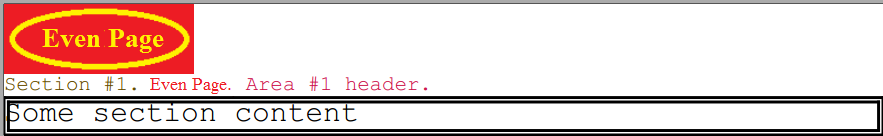

Configuring Repeating Area
Brief
The article describes how to add and configure Repeating Areas.
Details
A Repeating Area is a header or footer that can be repeated at every page of a Section or only at odd or even pages.
In order to manage repeating areas, each Section has a Layout property.
Layout can have three LayoutPages:
SinglePage, EvenPage, or OddPage.
There can be one page of type Odd plus one page of type Even, OR one page of type Single (per Section). Single means that this layout will appear at every page (odd and even).
You have to call AddSinglePage method,
and LayoutPage will be created for you to manage repeting areas at every page.
If you call AddEvenPage it will be rendered only at pages with even numbers.
And calling AddOddPage will lead to render repeating content only at odd pages.
Each layout page can have one or more LayoutAreas.
They are stored in RepeatingAreas property of LayoutPage as a collection.
An area can be located at the top of the page (header, by default) or at the bottom (footer). If there are several header areas added to one layout page, the top position of every next area will be calculated automatically depending on the height of the previous areas. Each next header will be placed under the previous header. The same is applied to several footers in one layout. Each next footer will be placed above the previous footer.
To add a layout area to a layout page, use AddRepeatingArea method
of the LayoutAreaBuilder class.
Pass true into isFooter optional parameter if you need the area to be at the bottom of the page.
Then use AddItem<T>
for adding either a Paragraph,
Image or Table to the area.
Use the AddPageNumber extension method of the Paragraph at the layout areas for printing automatic page numeration.
Default numeration is Arabic. Remember to call Section's SetNumerationStyle method
if you need to change it to UpperRoman, LowerRoman, UpperLatin, LowerLatin, UpperCyrillic, LowerCyrillic).
See also:
Examples
Adding Even Page Header [hide]
var builder = DocumentBuilder.New();
Section s = builder.AddDefaultSection();
s.AddParagraph("Some section content").SetFont(new Font { Name = "Courier", Size = 20f, Color = Color.Black }).SetAlignment(HorizontalAlignment.Left)
.SetBorderColor(Color.Black).SetBorderWidth(2).SetBorderStyle(Stroke.Double);
s.Layout.AddEvenPage().AddRepeatingArea(s.Page, 60, areaConfig: area =>
{
area.AddItem<Image>(image => { image.SetHref(ImageUrl).SetScale(ScalingMode.AutoSize);});
area.AddItem<Paragraph>(p =>
{
p.SetAlignment(HorizontalAlignment.Left).SetBorderWidth(4);
p.AddText("Section #1.").SetFont(Font.Courier(14)).SetFontColor(Color.FromRgba(0.4, 0.3, 0.0));
p.AddText(" Even Page.").SetFont(Font.Courier(13)).SetFontColor(Color.FromRgba(1.0, 0.0, 0.0));
p.AddText(" Area #1 header.").SetFont(Font.Courier(14)).SetFontColor(Color.FromRgba(0.8, 0.1, 0.3));
});
});
builder.Build(filename);
A code above will generate you the following:

You can achieve the same result with the following code: [show]